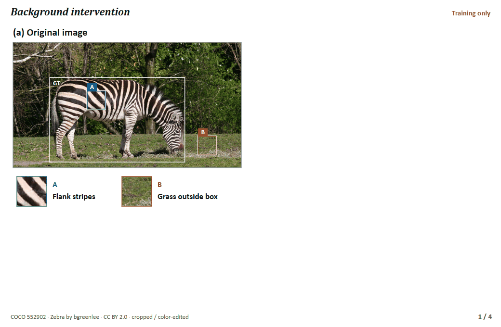

Boundary-State DETR
Distribution-Preserving Spatial Evidence Acquisition with Selective State Spaces


Abstract
When a detector estimates the extent of an object, a prediction concentrated on one region and a prediction spread across several plausible regions can yield the same reference box. Its coordinates alone do not convey how likely each region was. Boundary-State DETR carries the predicted boundary distribution into the next query update, weighting visual evidence from each candidate region by its probability.
In the final decoder layer, Boundary-Conditioned State Aggregation (BCSA) accumulates features within each candidate box in a Mamba state and updates the query with the weighted sum of these states. During training, a view with an altered background supplies only the step size Δ for the state update. The detector uses that step size with the original features to predict the original class and box. Inference takes one image. Trained without an external teacher, the HGNetv2-B4 L model achieved a reported 55.5 box AP on COCO val2017 in a single run.
Motivation & Objective
When parts of an object are occluded or blend into the background, several regions may look plausible. Those regions can contain different evidence for the next prediction. Even with the object held fixed, changes in its surroundings may alter which features a detector retains.
- Carry boundary uncertainty into the next prediction. Let the query draw on candidate regions in different proportions depending on whether one edge is certain or several are plausible.
- Detect the same object when its background changes. Train the detector to recover the original class and box even when the surroundings alter Mamba’s state update.
Highlights
- One state per candidate box. In the final decoder layer, Boundary-Conditioned State Aggregation (BCSA) gathers features inside each candidate region with Mamba, then weights the states by their boundary probabilities to update the query. Queries share interval computations on the same image.
- A background change that acts through Mamba. The edited view supplies only the step size Δ, which controls how much of the previous state to retain and how much new input to write. Training reuses the original features and targets. Inference takes one image.
- 55.5 box AP on COCO val2017 without an external teacher. The HGNetv2-B4 L model reached 73.1 AP50 and 60.4 AP75 in a single reported run. Experiment settings and results
Advancing DETR Object Detection


Boundary-State DETR

Query refinement with boundary-weighted features

Background changes and Mamba’s step size

Object detection on COCO val2017
The L model uses an ImageNet-initialized HGNetv2-B4 backbone and 58 epochs on COCO train2017, without an external teacher.
Boundary-State DETR-L at 640 × 640
| Model | AP | AP50 | AP75 | APS | APM | APL |
|---|---|---|---|---|---|---|
| Boundary-State DETR-L | 55.5 | 73.1 | 60.4 | 37.1 | 60.1 | 72.9 |
Box AP on all 5,000 COCO val2017 images, reported for one training run.
Comparison with state-of-the-art HGNetv2 detectors
| Detector | Size | Backbone | Box AP |
|---|---|---|---|
| D-FINE | L | HGNetv2-B4 | 54.0 |
| DEIM-D-FINE | L | HGNetv2-B4 | 54.7 |
| Boundary-State DETR | L | HGNetv2-B4 | 55.5 |
Earlier experiment · 12-epoch checkpoint adaptation
These runs started from a COCO-trained detector and used an earlier decoder design that replaced cross-attention. They test that design’s components under a different training protocol.
| Decoder variant | AP |
|---|---|
| Native baseline (B0) | 55.455 |
| Expected rectangle state | 55.461 |
| Single box | 55.016 |
| Occupancy-weighted pooling | 55.356 |
| Input-independent transition | 55.205 |